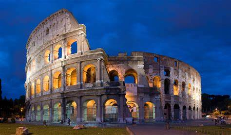
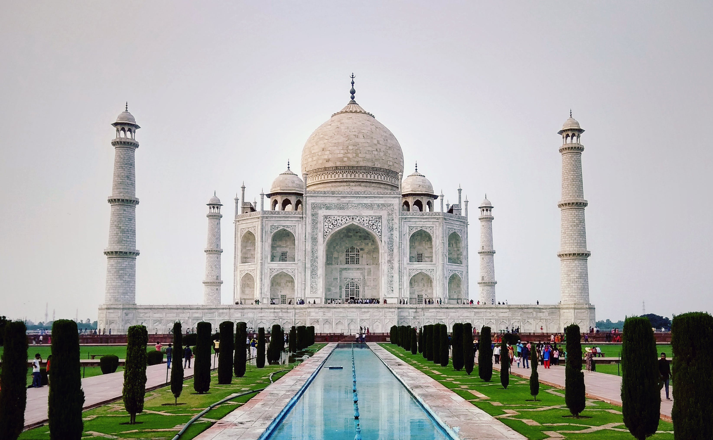
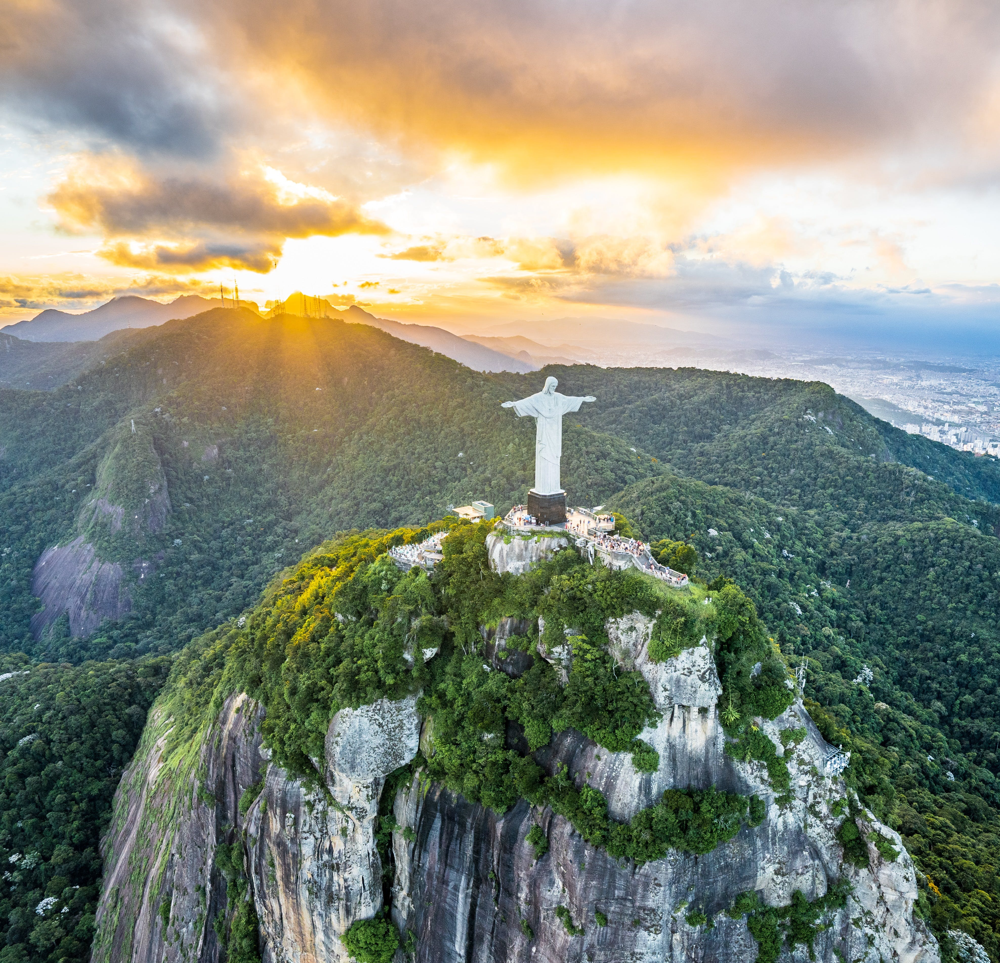
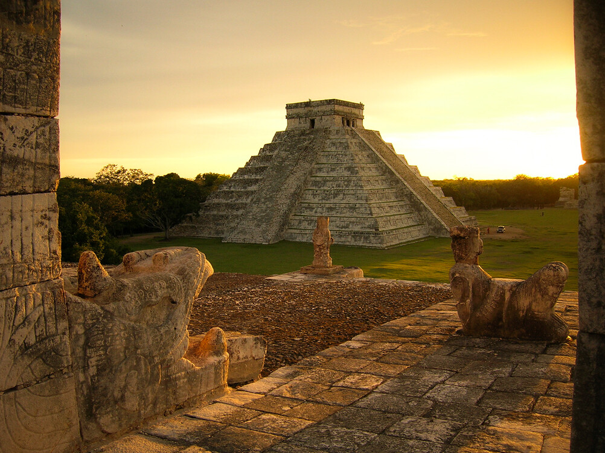
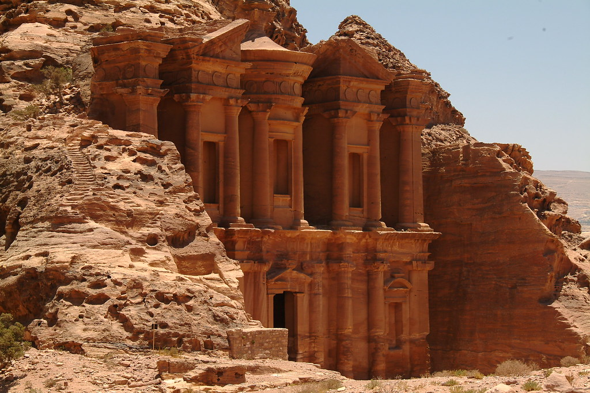

Here are the seven wonders of the world lists
-
Machu Picchu in Peru
Machu Picchu is a lost treasure of the 15th century. It is an ancient Incan citader nestled high in the Andes Mountains of Peru. It is renowned for its breahtaking panoramic views and mysterious archeological ruins.

-
The Great Wall of China
The Great Wall of China is a monumental architectural marvel spanning thousands of kilometers, steeped in history and cultural significance as one of the world's most iconic landmarks.

-
The Colloseum in Italy
The Colosseum is an iconic symbol of ancient Rome, stands as a majestic amphitheater, showcasing the grandeur of Roman engineering and hosting centuries of thrilling gladiatorial contests and spectacles.
 -
The Taj Mahal in India
The Taj Mahal is a sublime masterpiece of Mughal architecture, stands as a timeless testament to love, crafted from pristine white marble and surrounded by lush gardens, captivating visitors with its exquisite beauty and profound historical significance.
 -
Christ the Redeemer in Brazil
Christ the Redeemer is an iconic statue towering over Rio de Janeiro, Brazil, stands as a symbol of faith and compassion, offering panoramic vistas of the city while embodying the spirit of peace and unity.
 -
Chichen Itza in Mexico
Chichen Itza is an ancient Mayan archaeological site in Mexico, boasts impressive pyramids and temples, showcasing the rich cultural heritage and advanced architectural prowess of the Mayan civilization.
 -
Petra in Jordan
Petra is a nestled within the rugged desert canyons of Jordan, is a mesmerizing ancient city carved into rose-colored sandstone cliffs, revealing the ingenuity and splendor of the Nabateans, and captivating visitors with its archaeological wonders and timeless beauty.
